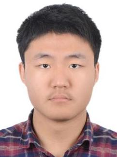

|  | Third-year PhD, advised by Prof. Jun Du. |
Multi-Array, Multi-Channel, Audio-visual Speech Signal Processing
Low Resource, Far-field Speech Recognition
Quantum Machine Learning
Few-shot Sound Event Detection
Deepfake Audio & Video Detection
1st of main & sub tracks in CHiME-7 DASR, Aug.2023.
1st of DCASE2023 Task5: few-shot bioacoustic event detection challenge, June. 2023
Outstanding intern of the year in iFlytek RDG Platform, Jan. 2022
1st of 15 constrained and 7 unconstrained tracks in low resource speech recognition challenge OpenASR21, Nov. 2021
2nd of synthetic speech detection challenge ASVspoof2021 LA task, Aug. 2021
Ruoyu Wang, Maokui He, and Jun Du. “The USTC-NERCSLIP Systems for the CHiME-7 DASR Challenge.” CHiME-7 Workshop, 2023.
Ruoyu Wang, Jun Du, and Tian Gao. “Quantum Transfer Learning Using the Large-Scale Unsupervised Pre-Trained Model Wavlm-Large for Synthetic Speech Detection.” ICASSP 2023-2023 IEEE International Conference on Acoustics, Speech and Signal Processing (ICASSP). IEEE, 2023.
Ruoyu Wang, Jun Du, and Chang Wang. “Multi-branch Network with Circle Loss Using Voice Conversion and Channel Robust Data Augmentation for Synthetic Speech Detection.” Chinese Conference on Biometric Recognition. Cham: Springer Nature Switzerland, 2022.
Guolong Zhong, Hongyu Song, Ruoyu Wang, et al. “External Text Based Data Augmentation for Low-Resource Speech Recognition in the Constrained Condition of OpenASR21 Challenge.” Proc. Interspeech 2022 (2022): 4860-4864.
PhD in Information and Communication Engineering for Data Science, University of Science and Technology of China, Sept. 2021 - present
B.S. in Mathematics, Department of Probability and Statistics, University of Science and Technology of China, Sept. 2017 - Jun. 2021